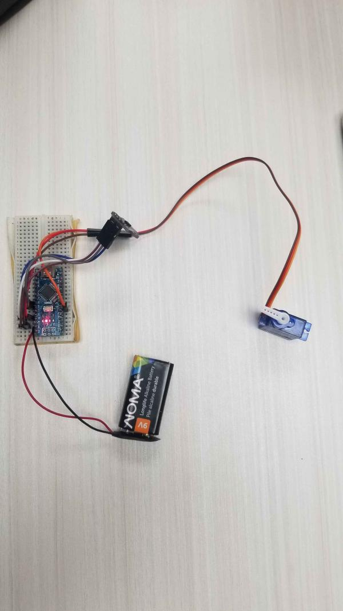

Matthew Verge
Matthew Verge
I've made my fair share of games in Godot, with a couple I plan on releasing some day. Here's some previews of those games.
A 2D Platformer about a little robot.
A solo website made for a final exam in my software course. Uses express.js for backend, and a PostgreSQL server for the database.
This here is a very early version of "Automatic Chopsticks" I had made. It used a laser range finder and a servo motor to detect when food entered range and would clamp down with the chopsticks. It uses an Arduino Nano, and was my first experience with soldering.
